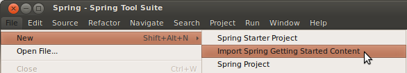
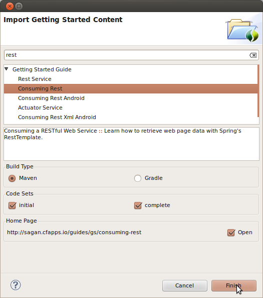
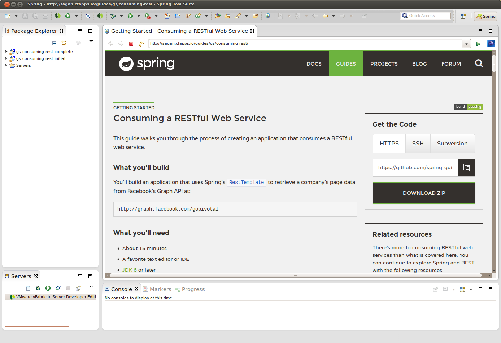

本指南将引导您逐步使用Spring Tool Suite（STS）来构建入门指南之一。
你会建立什么
您将选择一个Spring指南，并将其导入Spring Tool Suite。然后，您可以阅读指南，编写代码并运行项目。
你需要什么
-
约15分钟
-
JDK 8或更高版本
安装STS
如果您尚未安装STS，请访问上面的链接。您可以从那里下载适合您平台的副本。要安装它，只需解压缩下载的档案。
完成后，继续并启动STS。
导入入门指南
在STS正常运行的情况下，从“ 文件”菜单打开“ 导入Spring入门内容”向导。

弹出向导将为您提供搜索和选择Spring网站中任何已发布指南的机会。您可以浏览列表，也可以输入搜索词以立即过滤选项。]
| 提供即时搜索结果时，准则将同时应用于标题和说明。支持通配符。 |
您还可以决定是获取初始代码集， 完整代码集还是同时获取这两者。对于大多数项目， 初始代码集是一个空项目，使您可以通过指南进行复制和粘贴。完整的代码集是已输入指南中的所有代码。如果两者兼得，您可以将您的工作与指南进行比较，并查看差异。
最后，您可以让STS打开网站上指南的浏览器选项卡。这样一来，您无需离开STS即可阅读指南。
就本指南而言，在即时搜索框中输入“ rest ”。然后选择“ 消耗休息” 。选择Maven进行构建，以及初始和完整的代码集。还可以选择打开网页，如下所示：

STS将在您的工作空间中创建两个新项目，导入Consuming Rest代码库（初始和完整），并在STS内打开浏览器选项卡，如下所示：

从这里，您可以浏览指南并导航到代码文件。
摘要
恭喜你！您已经设置了Spring Tool Suite，导入了Consuming Rest入门指南，并打开了一个浏览器选项卡以进行遍历。
也可以看看
以下指南也可能会有所帮助：
是否要编写新指南或为现有指南做出贡献？看看我们的贡献准则 。
| 所有的导游都发布了一个ASLv2许可证的代码，一个署名，NoDerivatives Creative Commons许可的写作。 |